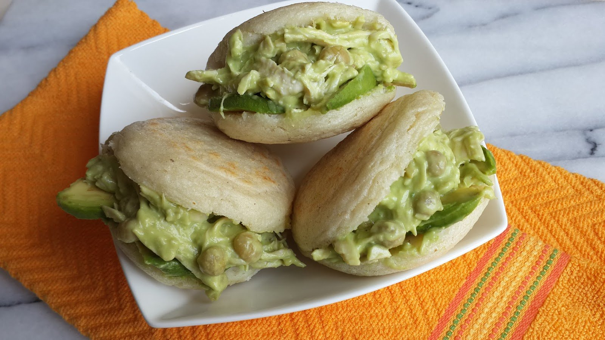

Orígenes

La arepa, tiene sus raíces en la época precolombina. Los indígenas americanos ya cultivaban y procesaban el maíz, el ingrediente principal. A lo largo de los siglos, esta preparación ha evolucionado, incorporando nuevos ingredientes y técnicas. Su origen humilde se ha convertido en un legado compartido en el mundo, siendo un vínculo con la cultura de Venezuela.